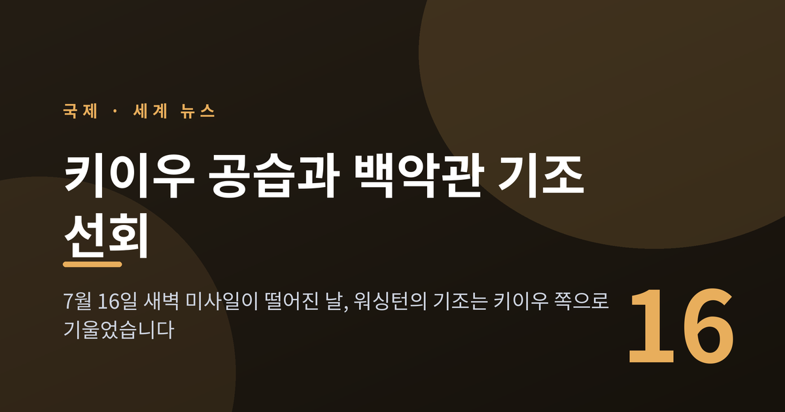
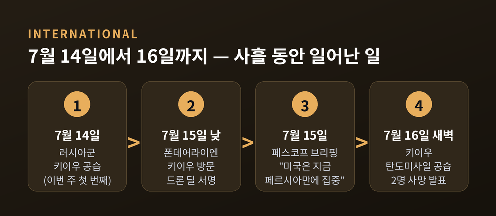
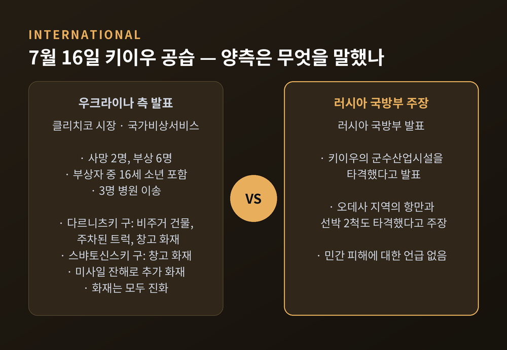
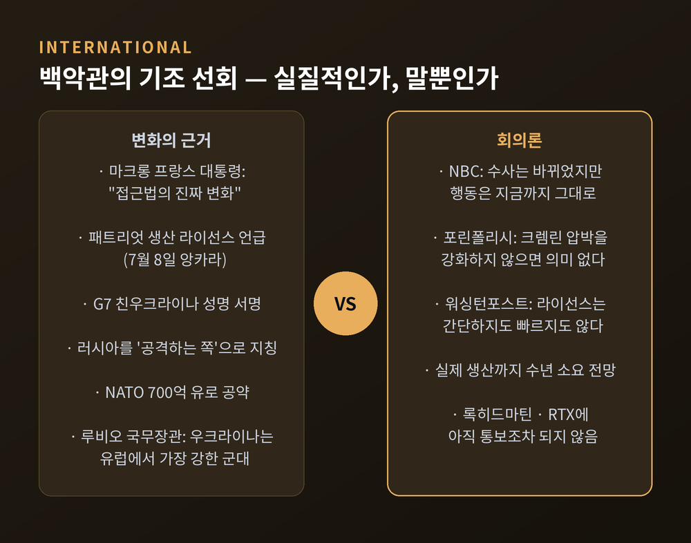
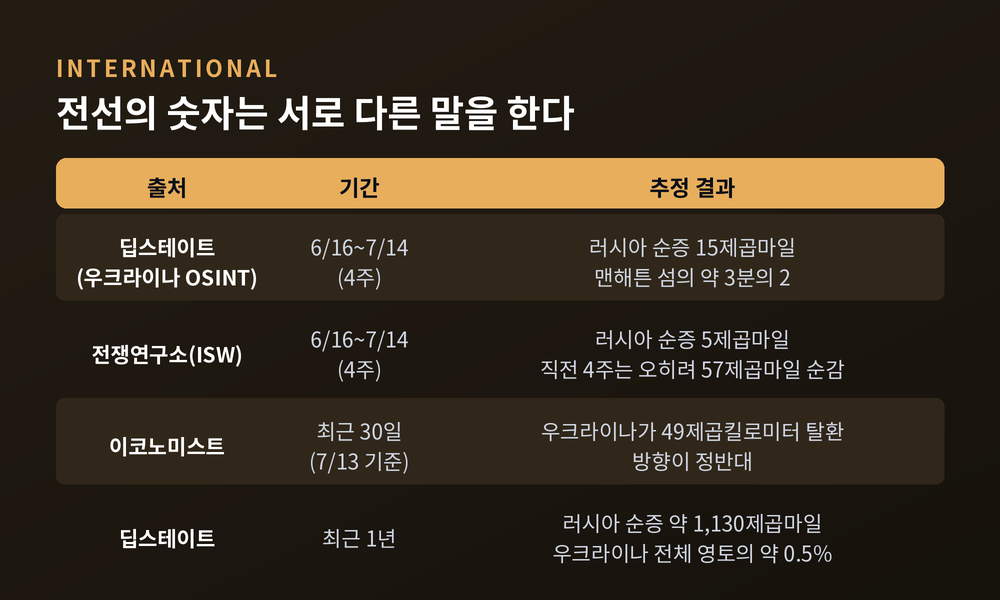
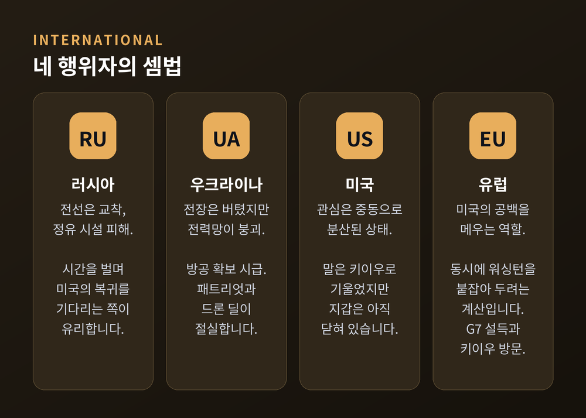
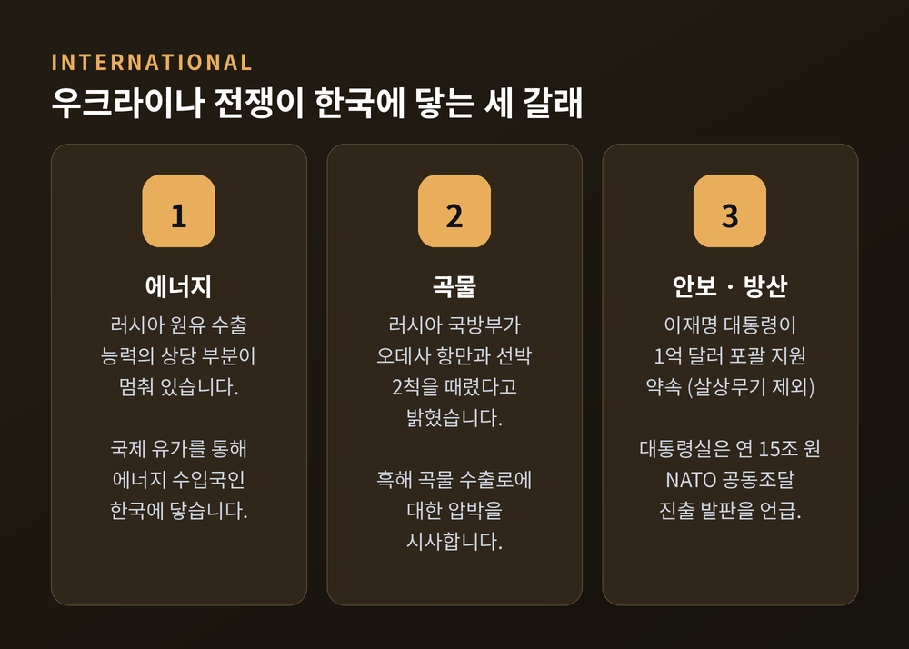

키이우 공습과 백악관 기조 선회, 우크라이나 전쟁 7월 중순 국면

이번 글에서는 2026년 7월 중순 우크라이나 전쟁의 국면을 정리해 보겠습니다. 7월 16일 새벽 키이우에 다시 미사일이 떨어졌고, 같은 시기 백악관의 기조는 키이우 쪽으로 기울고 있습니다. 두 흐름이 왜 동시에 나타나는지 짚어보려 합니다.

7월 16일 새벽, 키이우에 무슨 일이 있었나
러시아군이 7월 16일 이른 새벽 키이우를 탄도미사일로 공격했습니다.
비탈리 클리치코 키이우 시장은 텔레그램을 통해 2명이 숨지고 6명이 다쳤다고 밝혔습니다. 부상자 중에는 16세 소년이 포함됐습니다. 3명은 병원으로 옮겨졌습니다. 티무르 트카첸코 키이우 군정청장도 공습 사실을 확인했습니다.
우크라이나 국가비상서비스의 발표에 따르면 두 개 구역이 피격됐습니다. 다르니츠키 구에서는 비주거 건물과 인근에 주차된 트럭들, 창고에서 불이 났습니다. 스뱌토신스키 구에서는 창고가 맞아 화재가 발생했습니다. 미사일 잔해가 떨어져 추가 화재가 번지기도 했습니다. 화재는 모두 진화됐습니다.
러시아 국방부의 설명은 다릅니다. 러시아 측은 키이우의 군수산업시설을 타격했으며, 오데사 지역의 항만과 선박 2척도 함께 공격했다고 발표했습니다.
여기서 한 가지 짚어야 할 것이 있습니다. 어느 쪽 주장도 독립적으로 검증되지 않았습니다. 우크라이나 당국은 민간 피해를 말하고, 러시아 국방부는 군사 표적을 말합니다. 전쟁 중의 발표는 사실 전달인 동시에 선전이기도 합니다. 그래서 이 글에서는 각 수치가 누구의 입에서 나왔는지를 계속 밝히겠습니다.
이번 공습은 일주일 새 두 번째였습니다. 직전 공격은 7월 14일이었습니다. 하루 전인 7월 15일에는 우크라이나 지방당국 발표 기준으로 전국에서 13명이 숨지고 약 50명이 다쳤습니다. 오데사와 수미의 산업시설·의료시설이 표적이었습니다.

하필 그 시각이었던 이유
공습 시점은 우연으로 보기 어렵습니다.
몇 시간 전, 우르줄라 폰데어라이엔 EU 집행위원장이 키이우에 있었습니다. 그는 우크라이나 국가성의 날 기념식에서 젤렌스키 대통령과 만나 이른바 '드론 딜'에 서명했습니다. 우크라이나의 전장 경험과 EU의 산업 역량을 합쳐 공동 생산을 빠르게 키우겠다는 구상입니다.
폰데어라이엔 위원장은 "우리의 강점을 결합해야 한다"고 말했습니다. EU가 우크라이나에 거대한 기술·산업 역량과 안전한 생산 부지를 제공할 수 있다고도 했습니다. 다만 구체적인 금액이나 물량은 공개되지 않았습니다.
CNN은 키어 스타머 영국 총리가 젤렌스키 대통령을 만나러 키이우에 도착할 예정이던 시각의 몇 시간 전에 공습이 있었다고 전했습니다.
유럽의 지도자가 키이우에 오는 날, 미사일이 떨어집니다. 이 패턴은 이번이 처음이 아닙니다. NATO 앙카라 정상회의가 열리던 7월 8일에도 러시아는 키이우를 때렸고, 우크라이나 발표 기준 최소 3명이 숨졌습니다.
백악관은 왜, 그리고 얼마나 움직였나
이 시기 워싱턴에서는 다른 방향의 움직임이 있었습니다.
예전의 트럼프 대통령은 젤렌스키 대통령에게 협상 "카드가 없다"며 빨리 합의하라고 압박했습니다. 지금은 러시아를 전쟁의 '공격하는 쪽'으로 지칭하고, G7의 친우크라이나 성명에 서명했습니다.
변화의 계기로는 유럽 지도자들의 설득이 지목됩니다. 블룸버그는 트럼프 대통령이 G7에서 유럽 지도자들과 대화한 뒤 입장을 바꿨다고 보도했습니다. 프랑스에서 열린 이 회의에서 각국 지도자들은 유럽과 미국이 우크라이나의 전장 입지가 강해지고 있다는 인식을 공유하게 됐다고 판단했습니다.
에마뉘엘 마크롱 프랑스 대통령은 트럼프 대통령이 "접근법의 진짜 변화"를 보이고 있다고 평가했습니다. 한 NATO 외교관의 표현은 더 직설적이었습니다. 트럼프는 승자를 좋아하는데, 우크라이나가 최근 이기기 시작했다는 것입니다.
마르코 루비오 국무장관도 5월에 우크라이나가 유럽에서 가장 강한 군대를 보유했다고 평가했습니다. 키이우포스트는 트럼프 대통령이 우크라이나의 러시아 종심 타격에 관한 정보 브리핑을 받고 깊은 인상을 받았다고 전했습니다.
가장 구체적인 결과물은 패트리엇입니다. 7월 8일 NATO 앙카라 정상회의에서 트럼프 대통령은 미국이 우크라이나에 패트리엇 방공 시스템 생산 라이선스를 주겠다고 밝혔습니다. 재고를 더 보내주는 것이 아니라, 우크라이나가 직접 만들게 하겠다는 구상입니다. NATO는 2026년 우크라이나에 700억 유로 규모의 군사 장비·지원·훈련을 공약했고, 2027년에도 최소 같은 수준을 유지하겠다고 했습니다.
다만 이 대목은 신중하게 볼 필요가 있습니다. 워싱턴포스트는 라이선스가 실제 무기로 이어지기까지 간단하지도 빠르지도 않을 것이라고 지적했습니다. 전문가들은 수년이 걸릴 것으로 보며, 우크라이나가 완전한 자국 생산보다 조립·통합부터 시작할 가능성이 크다고 봅니다. 핵심 기술은 미국 통제에 남을 전망입니다. 트럼프 대통령 본인도 제조사인 록히드마틴과 RTX에는 아직 통보하지 않았다고 인정했습니다.
회의론은 더 있습니다. NBC는 트럼프 대통령의 수사는 바뀌었지만 행동은 그대로라고 평가했습니다. 포린폴리시는 크렘린에 대한 압박을 실제로 강화하지 않는다면 말의 변화는 큰 의미가 없다는 외교가의 시각을 전했습니다.

크렘린이 읽는 그림
모스크바의 해석은 또 다릅니다.
드미트리 페스코프 크렘린 대변인은 7월 15일 브리핑에서 두 가지를 말했습니다. 하나는 모스크바가 기존 소통 채널을 통해 미국으로부터 신호를 받고 있다는 것입니다. 이란 상황이 정리되면 미국이 우크라이나 문제로 돌아올 준비가 되어 있다는 신호라고 했습니다.
다른 하나는 지금 미국이 우크라이나 해결에 실질적으로 관여하지 않고 있다는 주장입니다. 페르시아만 상황이 다시 "악화 국면"에 들어섰고, 워싱턴의 시선이 그쪽에 가 있다는 것입니다.
이 발언은 크렘린의 일방적 서술입니다. 미국이 이란을 정리한 뒤 우크라이나로 돌아가겠다고 공식 확인한 적은 없습니다. 크렘린 입장에서 미국이 곧 돌아온다는 서사는 제재와 압박 국면을 늦추는 데 유리하기도 합니다.
그렇다고 근거가 전혀 없는 이야기도 아닙니다. NBC는 트럼프 대통령이 앙카라 정상회의를 이란과 스페인을 향한 새로운 위협으로 뒤흔들었다고 보도했습니다. 미국의 관심이 분산돼 있다는 관찰 자체는 서방 보도에도 흔적이 있는 셈입니다.
한편 트럼프 대통령은 7월 4일 푸틴 대통령과 85분간 통화한 뒤, 7월 6일 전쟁 해결이 "사람들이 생각하는 것보다 가까워지고 있다"고 말했습니다. 명확한 최후통첩성 시한이 제시된 적은 없습니다. 오히려 초기의 빨리 합의하라는 압박은 최근 발언에서 자취를 감췄습니다.
전선의 진실 — 숫자는 서로 다른 말을 한다
전황을 보면 이 모든 외교가 왜 이렇게 더딘지 짐작이 갑니다.
하버드 벨퍼센터의 러시아 매터스가 7월 15일자로 정리한 자료를 보겠습니다. 최근 4주(6월 16일~7월 14일) 동안 러시아군의 순증 영토는 우크라이나 오시인트 그룹 딥스테이트 기준 15제곱마일입니다. 맨해튼 섬의 3분의 2 정도입니다. 같은 기간을 전쟁연구소 자료로 계산하면 5제곱마일입니다.
방향이 반대인 집계도 있습니다. 이코노미스트는 7월 13일 기준 최근 30일간 우크라이나가 49제곱킬로미터를 되찾았다고 추정했습니다. 키이우인디펜던트는 두 달 연속 우크라이나가 러시아의 점령분보다 더 많은 땅을 해방했다고 전했습니다. 2023년 반격 이후 처음입니다.
한 해 전체로 보면 그림이 선명해집니다. 지난 1년간 러시아가 얻은 땅은 약 1,130제곱마일입니다. 우크라이나 전체 영토의 0.5% 수준입니다. 4년 넘게 싸워 추가로 점령한 영토는 12%입니다.
"이 전쟁은 이기는 쪽이 아니라 버티는 쪽의 싸움이 됐습니다."
인명 피해는 더 조심스럽습니다. 러시아군 사상자는 메디아조나가 실명으로 확인한 전사자 35만여 명부터, CSIS가 7월 보고서에서 제시한 사상자·실종 포함 약 140만 명까지 추정이 엇갈립니다. 우크라이나군의 경우 젤렌스키 대통령은 2월에 전사자 5만 5천 명이라고 밝혔지만, CSIS는 52만 5천~62만 5천 명의 사상자를 추산합니다. 집계 기준 자체가 다릅니다. 러시아 매터스는 이런 수치를 자신들도 검증할 수 없다고 명시해 두었습니다.
민간인 피해는 UN 집계로 우크라이나에서 약 1만 6천 명이 숨졌습니다. 러시아 정부는 우크라이나군의 행동으로 자국 주민 8,012명이 사망했다고 발표했습니다. 실향민은 960만 명, 전쟁 전 인구의 22%에 이릅니다.

잘 보이지 않는 전선, 에너지
이 전쟁의 또 다른 축은 에너지입니다.
우크라이나는 드론으로 러시아의 정유시설과 수출항을 때려왔습니다. 로이터는 3월 25일 기준 러시아 원유 수출 능력의 최소 40%가 멈췄다고 계산했습니다. 흑해의 노보로시스크, 발트해의 프리모르스크와 우스트루가가 모두 피격됐습니다. 4월에는 러시아가 하루 30만~40만 배럴을 감산했습니다. 6년 만의 최대 감소폭입니다.
피해 규모 추정은 크게 엇갈립니다. 젤렌스키 대통령은 5월에 정유능력의 약 10%가 무력화됐다고 했고, 7월 월스트리트저널과 파이낸셜타임스가 인용한 경제학자들은 20~40%로 봤습니다. 옥스퍼드에너지연구소는 러시아 정유능력이 전쟁 전 하루 520만 배럴에서 380만 배럴로 떨어졌다고 추산했습니다. 21년 만의 최저입니다. 흥미롭게도 당사자인 우크라이나 대통령의 추정이 서방 추정보다 낮습니다.
반대편도 마찬가지입니다. 러시아의 공격으로 우크라이나의 가용 발전용량은 침공 시작 당시 33.7기가와트에서 올해 1월 약 14기가와트로 줄었습니다. 젤렌스키 대통령은 2월에 우크라이나의 모든 발전소가 손상됐다고 밝혔습니다. 뉴욕타임스에 따르면 1월 키이우의 350만 주민은 평균적으로 하루의 절반을 정전 상태로 보냈습니다.
여기서 눈여겨볼 대목이 하나 있는데요. 러시아에서는 64%가 평화 협상을 지지하고(레바다센터, 7월 7일), 우크라이나에서는 66%가 정부가 가급적 빨리 종전 협상에 나서야 한다고 답했습니다. 양국 국민 다수는 이미 같은 방향을 보고 있습니다.
네 행위자의 셈법, 그리고 한국
이 국면을 이해하려면 네 축의 이해관계를 나란히 놓아야 합니다.
러시아는 전선에서 결정적 성과를 내지 못한 채 정유 시설을 잃고 있습니다. 월스트리트저널은 연료 부족이 전역으로 번지며 푸틴 대통령이 정치적 위기에 직면했다고 평가했습니다. 시간을 벌면서 미국의 복귀를 기다리는 편이 유리합니다.
우크라이나는 전장에서 예상보다 잘 버텼지만 전력망이 무너졌습니다. 무기와 방공을 확보하는 것이 급합니다. 그래서 패트리엇 라이선스와 EU 드론 딜이 절실합니다.
미국은 관심이 분산돼 있습니다. 말은 키이우 쪽으로 기울었지만 지갑은 아직 열리지 않았다는 것이 여러 매체의 공통된 관찰입니다.
유럽은 미국의 공백을 메우면서 동시에 워싱턴을 붙잡아 두려 합니다. G7과 NATO에서의 설득, 폰데어라이엔 위원장의 키이우 방문이 그 연장선입니다.

한국은 어떨까요.
이재명 대통령은 7월 8일 앙카라에서 젤렌스키 대통령과 첫 정상회담을 갖고 1억 달러 규모의 포괄적 지원을 약속했습니다. 살상무기는 지원하지 않는다는 기존 입장은 유지했습니다. 하루 전에는 마르크 뤼터 NATO 사무총장을 만나 한·NATO 조달 기본협정을 추진하고 방산 공급망 협력을 넓히기로 했습니다. 대통령실은 이를 두고 연 15조 원 규모 NATO 공동조달 시장 진출의 발판을 마련했다고 평가했습니다. 두 정상은 북한군 포로 문제에서 당사자 의사를 존중한다는 원칙에도 뜻을 모았습니다.
경로는 세 갈래입니다. 첫째, 에너지입니다. 러시아 원유 수출 능력의 상당 부분이 멈춰 있는 상황은 국제 유가를 통해 에너지 수입국인 한국에 닿습니다. 둘째, 곡물입니다. 러시아 국방부가 오데사 항만과 선박 2척을 때렸다고 밝힌 대목은 흑해 곡물 수출로에 대한 압박을 시사합니다. 셋째, 안보입니다. 북러 협력 강화는 한국의 직접적 관심사이고, 그래서 한국과 우크라이나의 외교 채널에서 북한군 포로 문제가 다뤄집니다.
다만 정직하게 덧붙이겠습니다. 이번 공습이 한국의 유가나 곡물가를 몇 퍼센트 움직였는지를 보여주는 자료는 확인하지 못했습니다. 여기서 말할 수 있는 것은 구조적 경로까지입니다.

앞으로 무엇을 지켜봐야 하나
세 가지를 보시면 좋겠습니다.
첫째, 패트리엇 라이선스가 문서로 넘어가는지입니다. 록히드마틴과 RTX에 실제 통보가 가고 계약 형태가 잡히는지가 분수령입니다. 말과 행동의 간극이 여기서 드러납니다.
둘째, 페르시아만입니다. 페스코프 대변인의 주장대로 미국의 시선이 중동에 묶여 있다면, 우크라이나 협상은 계속 뒤로 밀립니다. 반대로 중동이 정리되면 워싱턴이 어떤 조건을 들고 돌아올지가 관건입니다.
셋째, 대러 제재입니다. 포린폴리시의 지적대로 압박 없는 수사는 오래가지 못합니다. 크렘린 브리핑에서도 미국의 신규 제재 계획이 주요 주제로 다뤄졌습니다.
끝으로 한 마디만 더 드리겠습니다.
7월 16일 새벽 키이우에서는 두 사람이 숨졌습니다. 같은 주에 워싱턴에서는 전쟁 종식이 가까워지고 있다는 말이 나왔습니다. 러시아에서는 64%가, 우크라이나에서는 66%가 협상을 원한다고 답했습니다. 그럼에도 미사일은 계속 떨어집니다.
숫자는 서로 다른 말을 하고, 양측의 발표는 각자의 진실을 가리킵니다. 이런 사안일수록 어느 한쪽의 서사를 통째로 받아들이지 않는 태도가 필요합니다.
이 전쟁이 곧 끝나겠냐고 물으신다면, 저는 아직 그렇게 답하지 못하겠습니다. 다만 그 답이 전선이 아니라 회담장에서 나올 가능성은 조금씩 커지고 있다고 생각합니다.